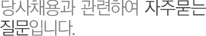

컨텐츠영역
인재채용

- 채용모집 분야 및 시기는 언제입니까?
-
채용분야는 [홈페이지 > 인재채용 > 입사지원가이드]를 통해 확인하실 수 있으며,
3급 신입사원은 삼성채용 홈페이지를 통해 상반기, 하반기에 지원서를 접수 받고 있습니다.
기타 직무별 모집 공고는 [홈페이지 > 인재채용 > 채용공고] 또는 채용포털 사이트를 통해 확인하실 수 있습니다.
경력사원은 연중 상시 모집하고 있습니다.
- 3급 신입사원의 모집 시기와 지원자격은?
-
일반적으로 3급 신입사원은 대졸신입사원을 지칭하며 상반기, 하반기에 지원서 접수가 시작됩니다.
삼성채용 홈페이지를 통해 모집합니다.
지원 자격은,
* 학력과 연령, 성별에 제한이 없습니다.
* 해외여행에 결격사유가 없어야 하며, 남자는 병역기피 사실이 없어야 합니다.
* 공인된 영어회화 자격은 필수입니다. (채용공고內 모집 직군에 따라 개별 명시)
* 영어회화 자격은 지원서를 제출하는 기간 동안 유효한 성적에 한해 지원이 가능합니다.
* 기타 전공을 포함한 지원자격은 채용공고에 명시하고 있습니다.
- 4,5급 신입사원의 모집시기와 지원자격은?
-
4급은 전문대졸, 5급은 고졸 사원을 지칭하며, 모집시기는 홈페이지를 통해 별도 공고됩니다.
지원 자격은,
* 학력과 연령, 성별에 제한이 없습니다.
* 해외여행에 결격사유가 없어야 하며, 남자는 병역기피 사실이 없어야 합니다.
* 세부 지원자격은 채용 공고에 명시하고 있습니다.
- 경력 사원의 모집시기와 지원자격은?
-
경력사원은 연중 상시로 모집되며, 당사 홈페이지 또는 삼성채용 홈페이지를 통해 공고 게시되고 있습니다.
지원자격은,
* 지원분야 실무경력 4년 이상으로 영어회화가 가능하고, 해외여행에 결격사유가 없는 분들은 누구나 응시 가능합니다.
* 해양분야는 플랜트, 엔지니어링 분야 경력이 인정됩니다.
※ 모집 직종에 따라 지원자격이 상이하오니, 채용공고를 확인하여 주시기 바랍니다.
- 지원서 작성은 어떻게 하나요?
-
[3급 신입채용]
삼성채용 홈페이지에 접속하셔서 [인재와 채용]→[채용지원]→[3급신입채용] 메뉴를 클릭, 최초로 지원서를 작성하시는 분들은 [신규 회원 가입] 버튼을 누르시고 로그인용 이메일 주소와 비밀번호 설정, 로그인 후 지원서를 작성합니다.
[경력채용]
삼성중공업 홈페이지(http://www.samsungshi.com)에 접속하셔서 [인재채용]→[입사지원가이드]→[채용절차]→[경력채용]→[온라인지원서 작성] 메뉴를 클릭, 로그인 후 지원서를 작성합니다.
단, 경력채용 지원서를 작성하시는 분들은 당사 지원서양식을 다운받으신 후 작성하시고 온라인 지원서에 첨부 하셔야 합니다. (당사 지원서 양식: 당사 홈페이지에 게시)
- 인턴사원에 지원하고 싶습니다.
-
대학생 인턴사원은 삼성채용 홈페이지를 통해 모집합니다.
해당기간에 모집공고란을 확인하여 주십시오.
- 입사지원시 직무관련 자격증이 있으면 도움이 되나요?
-
해당 공고의 지원요건이 직무관련 자격증 보유를 의무로 하는 경우, 자격증 보유자는 채용전형시 가점을 부여받거나 우대를 받을 수 있습니다.
- 전형 후 불합격 여부 통보는?
-
입사지원서 작성시 입력하신 이메일로 결과가 통보됩니다.
- GSAT에 대해 알고싶습니다.
-
삼성직무적성검사(Global Samsung Aptitude Test)는 학력 또는 단편적인 지식 보다는 폭넓은 지식으로 주어진 상황을 유연하게 대처하고 해결할 수 있는 종합적인 능력을 평가하는 검사입니다.